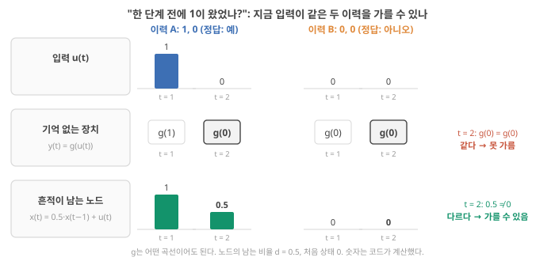
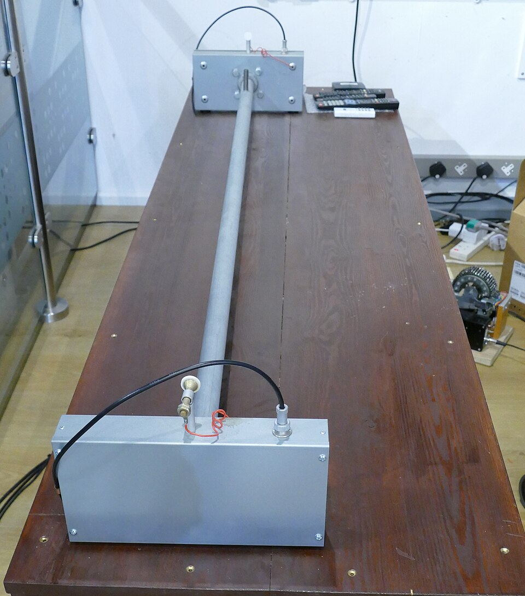
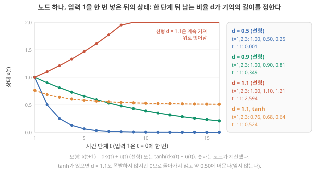
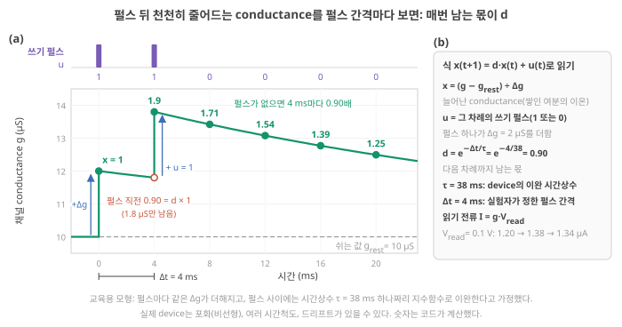
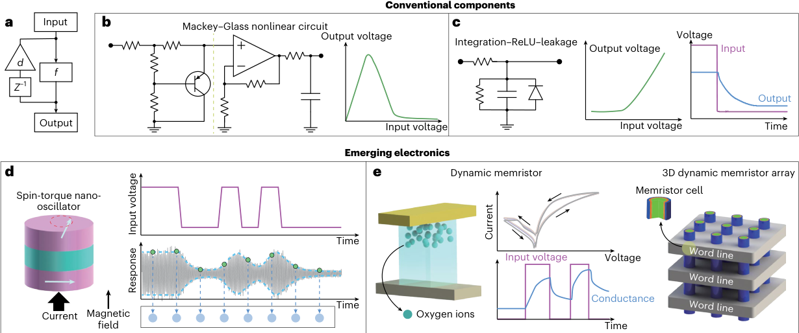
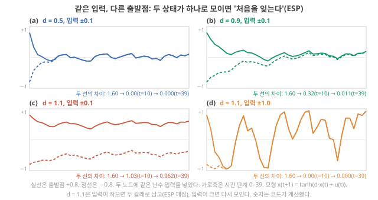

Day 15. fading memory와 입력 간격, 처음 상태를 잊는 것(ESP)
Phase 2 · RC는 왜, 어떻게 작동하는가
이번 질문 왜 기억이 필요하고, 흔적이 얼마나 남아야 하며, 처음 상태는 왜 잊어야 하나?
왜 배우나 pulse response의 τ로 d를 구해 기억이 과제 시간척도에 맞는지 판단한다.
오늘의 장면 펄스 입력 u → x(t+1) = d·x(t) + u → k단계 전 흔적이 d^k로 남음 → d < 1이면 ESP
오늘 반드시 d < 1이면 k단계 전 입력의 몫이 d^k로 준다(fading memory). d = e^(−Δt/τ)라 같은 device도 간격에 따라 d가 다르다.
나중에 봐도 됨 ESP의 입력 크기 의존 · 노드 하나 tanh 분석 · Liang 2024 Fig. 3
넘어가는 기준 '오늘 반드시'를 내 말로 말할 수 있으면 충분합니다.
이후 쓰이는 곳 Day 15–16 고윳값·ρ · Day 21–22 washout·ESP · Day 23–24 τ와 시간척도 · Day 39–40 이온 이완
지난 학습 복습
지난 학습 단위(Day 14 · 분류 readout과 학습 방법, 고정해도 되는 이유)의 핵심을 다른 예로 확인합니다. 고르는 즉시 맞았는지와 이유가 보입니다. 틀려도 아래 학습자료는 그대로 열려 있고, 틀린 문제에는 다시 볼 곳이 붙습니다.
사전 테스트 (선택)
사전 테스트 펼치기 · 배우기 전에 짐작해 보는 문제 (선택)
학습자료
Day 13–14에서 reservoir(내부를 고정한 순환 네트워크, Day 12의 ESN·LSM 절)의 상태가 "지난 입력들의 고정된 비선형 함수"라는 것을 숫자로 보았습니다. 그리고 그 상태가 과거를 전부 담지는 못하고 "최근 입력의 일부"만 읽을 수 있게 남긴다고 했습니다. 오늘은 그 "최근"과 "일부"를 정확히 합니다. 이온 device 연구자에게 오늘의 질문은 특히 가깝습니다. 내 device의 전류가 펄스 뒤에 천천히 줄어드는 것이 왜 계산에 쓸모가 있다고들 하는지, 그 말이 언제 참이고 언제 거짓인지가 오늘의 끝에 놓입니다.
이번 주제에서 답할 질문 — 아래 학습 구간들이 차례로 답합니다.
- 어떤 계산에 기억이 필요한가? 기억 없이 하면 무엇이 불가능한가?
- Fading memory란 무엇인가? 한 단계 뒤 남는 비율 하나(0.5, 0.9, 1.1)가 무엇을 바꾸나?
- Echo state property란 무엇인가? 왜 "처음 상태를 잊는 것"이 필요한가?
- 노드가 여럿이면 "몇 배로 줄이나"를 무엇이 정하나? (Day 13–14의 2×2 표에서 이어서 손 계산) leak rate는 무엇을 바꾸나?
- 천천히 감소하는 전류는 어떤 인과 사슬을 거쳐 계산에 도움이 되나? 그 사슬은 어디서 끊기나?
1. 기억이 필요한 계산
상황. device에 전압 펄스를 주고 전류를 읽는데, 같은 전압에서 읽어도 '직전에 펄스가 있었나'에 따라 전류가 다르다면 그 device는 기억이 있는 것입니다. 이 구간은 기억이 없으면 풀 수 없는 계산이 무엇인지 먼저 보입니다.
왜 지금? 오늘의 질문(느린 감쇠가 어떻게 계산이 되나)은 "기억이 왜 필요한가"에서 시작합니다. 기억 없는 장치가 못 푸는 문제를 먼저 보아야 기억의 가치가 보입니다.
어디에 쓰이나? 논문의 "fading memory", "short-term memory"가 내 device의 어떤 성질을 가리키는지 읽을 때 씁니다.
끝나면 할 수 있는 것. "기억 없는 장치는 지금 입력이 같으면 늘 같은 답을 낸다"는 한 문장으로, 과거가 필요한 과제를 기억 없이 풀 수 없는 이유를 보이고, 기억을 얻는 두 가지 방법(저장해 두기, 상태에 흔적 남기기)을 구별할 수 있다.
기억이 없는 장치(memoryless system). 출력이 지금 입력 하나로만 정해지는 장치를 생각합니다. \(y(t) = g(u(t))\). 예를 들어 전압을 넣으면 그 순간의 전류가 나오는 이상적인 저항이 그렇습니다. 이런 장치는 아무리 복잡한 곡선 \(g\)를 가져도 "지금 입력이 같으면 답도 같다"는 성질에서 벗어나지 못합니다.
작은 예. 입력이 0과 1로 오는 신호에서 "한 단계 전에 1이 왔었나?"라는 질문을 합시다. 두 이력 "1, 0"과 "0, 0"을 비교합니다. 둘 다 지금 입력은 0입니다. 기억 없는 장치는 두 경우에 같은 출력 \(g(0)\)을 냅니다. 그런데 정답은 앞은 "예", 뒤는 "아니오"입니다. 어떤 \(g\)를 골라도 둘 중 하나는 틀립니다. 과거가 필요한 질문은 기억 없이 풀 수 없습니다. 증명은 이 한 줄이 전부입니다.

현실의 과제는 대부분 이렇다. 심전도에서 부정맥은 박동 하나의 모양뿐 아니라 앞 박동과의 간격으로 판단합니다. 말소리는 "ㄱ 다음에 ㅏ"처럼 순서가 뜻을 바꿉니다. 손동작 "삼각형"과 "역삼각형"은 같은 세 방향의 움직임을 다른 순서로 한 것입니다. Day 13–14에서 본 시계열 과제들은 거의 다 지금 값만으로는 답이 정해지지 않습니다.
기억을 얻는 두 방법. 해석
- 저장해 두기: 지난 입력 \(u(t-1), u(t-2), \dots, u(t-k)\)를 메모리에 그대로 적어 두고 함께 본다. 지난 입력 \(k\)개를 순서대로 보관하는 이 칸들을 delay tap이라 부르고, Day 21–22에서 이것을 device 없이도 얻을 수 있는 성능, 곧 기준선으로 씁니다(기준선). 정확하지만, 길이 \(k\)만큼의 저장 공간과 그것을 옮기는 비용이 든다(Day 3의 데이터 이동 비용).
- 상태에 흔적 남기기: 입력이 상태를 바꾸고, 그 변화가 천천히 사라지게 한다. 저장 공간이 따로 없어도 지금 상태에 과거의 흔적이 섞여 있다(Day 13–14의 \(x(t) = F(u(t-1), u(t-2), \dots)\)).
Reservoir와 물리 device는 둘째 방법입니다.
첫째 방법(저장해 두기)의 실물 예를 하나 봅니다. 옛 컴퓨터에는 신호를 관 속에서 일정 시간 늦춰 내보내는 부품(지연선, delay line)으로 "지난 값"을 들고 있는 메모리가 있었습니다. 지난 입력을 일정 시간 뒤에 꺼내 쓴다는 점에서 delay tap과 같은 발상입니다 해석.

흔적이 얼마나 남았나를 재는 점수: memory capacity(MC). 지금 상태만 보고 1단계 전, 2단계 전, …의 입력을 각각 얼마나 되살릴 수 있는지를 0~1 점수로 재어 모두 더한 값입니다. 클수록 지난 입력을 더 많이, 더 멀리까지 담고 있다는 뜻입니다. 뒤에서 노드 하나로 숫자를 직접 보고, 측정법은 Day 21–22에서 돌려 봅니다.
Liang은 RC에서 순환 연결 때문에 지금과 과거의 뉴런 동역학 사이에 의존성이 생기고, 이것을 단기 기억(short-term memory) 또는 fading memory라고 부르며, 이 기억은 과거 정보를 시간 단계를 넘어 reservoir 상태에 남게 하고 MC로 정량화된다고 씁니다. Liang 2024, p.194 ★ 그리고 physical reservoir computing에서 MC를 키우면 보조 메모리를 쓰지 않아도 되어 시스템 비용을 줄일 수 있다고 씁니다. Liang 2024, p.200 반대로 병렬로 놓은 동적 device들은 MC가 "누적되지 않고 대부분 겹쳐서" 낮은 수준에 머물고, 이것을 버퍼에 중간 상태를 저장해 보완하면 외부 메모리라는 비용이 든다고 적습니다. Liang 2024, p.196 두 방법이 서로의 대안이라는 뜻입니다.
- 기억 없는 장치 \(y = g(u(t))\)는 지금 입력이 같으면 늘 같은 답 → "1, 0"과 "0, 0"을 못 가른다. 과거가 필요한 과제는 기억 없이 못 푼다.
- 기억을 얻는 두 방법: 지난 입력을 저장해 두기(delay tap, 메모리 비용) vs 상태에 흔적 남기기(reservoir, 물리 device).
- RC의 단기/fading memory는 MC로 잰다 Liang 2024, p.194. MC가 크면 보조 메모리를 줄일 수 있다 Liang 2024, p.200.
2. Fading memory: 과거의 영향이 줄어드는 것
상황. 펄스 뒤 전류가 시간상수 38 ms로 줄어드는 device가 있다고 합시다(예시 값). 펄스를 4 ms 간격으로 넣을 때와 100 ms 간격으로 넣을 때, 다음 펄스가 오는 순간 이전 펄스의 흔적은 얼마나 남아 있을까요? 아래 \(d\)가 그 몫입니다(0.90과 0.07).
왜 지금? 기억을 상태의 흔적으로 얻는다면, 그 흔적이 한 단계마다 몇 배로 줄어드는지가 기억의 길이를 정합니다.
어디에 쓰이나? 내 device의 pulse response에서 \(\tau\)를 읽고 입력 간격으로 \(d\)를 계산해, device의 기억이 과제에 맞는지 가릴 때 씁니다.
끝나면 할 수 있는 것. 노드 하나의 상태가 입력 펄스 뒤에 \(d, d^2, d^3, \dots\)으로 줄어드는 것을 \(d\) = 0.5, 0.9, 1.1로 직접 계산하고, \(d\)를 시간상수 \(\tau\)와 입력 간격 \(\Delta t\)로 바꿀 수 있으며, 이온 device의 이완과 '감소하는 전류'를 식의 \(x\), \(u\), \(d\)로 옮기고, \(\tau\)와 retention이 다른 말인 이유를 말할 수 있다.
Day 11–12에서 숫자 하나짜리 RNN(상태를 다음 시간 단계로 넘기는 신경망) \(h(t+1) = \tanh(0.5\,h(t) + u(t))\)에 1을 한 번 넣으면 상태가 0.762 → 0.363 → 0.180으로 줄었습니다. Day 11–12은 이것이 Day 5–6 LIF의 \(u_{\text{다음}} = 0.9 \times u_{\text{지금}} + (\text{입력})\)과 같은 꼴, 곧 "이전 값의 일부를 남기고 새 입력을 더하는" 꼴이라고 했습니다(Day 11의 숫자 하나짜리 RNN). 오늘은 \(\tanh\)를 잠시 빼고, 남기는 비율 하나만 둔 가장 단순한 모형으로 그 말을 정확히 합니다.
Fading memory: 과거 입력의 영향이 줄어드는 것
모형. 노드 하나, 상태 \(x\), 입력 \(u\), 한 단계 뒤 남는 비율 \(d\)(무차원, 0 이상).
\[ x(t+1) = d\cdot x(t) + u(t) \]
- 뜻: 다음 상태 = (지금 상태의 \(d\)배) + (지금 입력). 매 단계 과거의 몫이 \(d\)배가 된다.
- 계산 순서: 지금 상태에 \(d\)를 곱한다 → 지금 입력을 더한다 → 다음 상태.
\(d\)는 '남는' 비율입니다. \(d\) = 0.9이면 한 단계 뒤 지금 값의 90%가 남고, 한 단계에 줄어드는 몫은 지금 값의 10%(\(1 - d\) = 0.1)입니다. 10에서 시작하면 10 → 9 → 8.1 → 7.29로, 줄어드는 양이 1, 0.9, 0.81로 점점 작아집니다. "매 단계 0.9씩 뺀다"도, "처음 값의 10%씩 일정하게 준다"도 아닙니다. Day 5–6 LIF의 0.9를 읽던 방식과 같습니다(Day 5의 LIF 감쇠). 문헌은 이 \(d\)를 decay factor라고 부르고, 이 교재의 뒤 Day에서 '줄어드는 비율 \(d\)'라고 적은 곳도 같은 \(d\)(남는 몫)를 가리킵니다.
무엇을 볼지. 그림 2은 \(t = 0\)에 1을 한 번 넣고 그 뒤로는 입력 0일 때, \(d\)만 다른 노드들의 상태입니다. 가로축은 시간 단계, 세로축은 상태 \(x\)(단위 없음). 색마다 몇 단계 만에 0에 가까워지는지, 그리고 0으로 가지 않는 선이 어느 것인지 보세요.

손 계산(그림 2의 점을 하나씩). \(x(0) = 0\), 입력은 \(t = 0\)에 1, 그 뒤로는 0.
- 파랑 \(d = 0.5\): \(x(1) = 1\), \(x(2) = 0.5\), \(x(3) = 0.25\), \(x(4) = 0.125\). 한 단계마다 절반. 10단계 뒤에는 0.001.
- 초록 \(d = 0.9\): \(1, 0.9, 0.81, 0.729, \dots\) 10단계 뒤에도 0.349가 남는다.
- 빨강 \(d = 1.1\): \(1, 1.1, 1.21, 1.331, \dots\) 줄지 않고 커진다. 10단계 뒤 2.59, 15단계 뒤 4.18.
일반적으로 \(k\)단계 전 입력이 지금 상태에 남긴 몫은 \(d^k\)입니다. 그래서 지금 상태는
\[ x(t) = u(t-1) + d\,u(t-2) + d^2 u(t-3) + \cdots \]
처럼 지난 입력들의 가중합이고, weight가 과거로 갈수록 \(d\)배씩 줄어듭니다. 이것이 fading memory(흐려지는 기억)입니다. \(d < 1\)이면 오래된 입력일수록 영향이 작아지고, 결국 지금 상태는 최근 입력들이 주로 정합니다. Day 13–14의 "읽을 수 있게 남는 것은 최근 입력의 일부"가 바로 이 뜻입니다.
같은 성질을 두 방향에서 말한다. 문헌은 같은 성질을 두 방향에서 말합니다. Liang은 "과거 정보가 상태에 남는다"(단기 기억) 쪽에서 Liang 2024, p.194, Stepney는 "먼 과거의 세부가 지금 상태를 좌우하지 않는다" 쪽에서 Stepney 2024, p.668 씁니다. 둘 다 맞고, 한 성질의 앞뒷면입니다. 최근은 남고 먼 과거는 흐려진다.
\(d\) = 1.1은 왜 나쁜가. 기억이 오래가니 좋을 것 같지만 둘 다 문제입니다. 선형이면 과거가 계속 커져 결국 지금 입력의 몫(1)이 과거의 몫(수십, 수백)에 묻힙니다. \(\tanh\)가 있으면 터지지는 않지만, 한 번 1이 들어온 뒤 상태가 0.50 근처에 영원히 머뭅니다. 0.50에서는 \(\tanh(1.1 \times 0.50) = \tanh(0.55) = 0.50\)이라 다음 상태가 지금 상태와 같기 때문입니다(이렇게 넣으면 그대로 나오는 값을 이 교재는 'fixed point'이라 부릅니다. 수학 용어로는 고정점(fixed point)이고, echo state property 절에서 다시 씁니다). 그 뒤로 무엇이 들어와도 "언젠가 1이 왔었다"는 사실만 남고, 언제·몇 번이었는지는 구별되지 않습니다. 저장 device(비휘발성 메모리)로는 좋은 성질이지만, 시계열을 처리하는 reservoir로는 나쁜 성질입니다. Day 1–2의 "같은 현상, 정반대의 역할: 휘발성과 비휘발성"(Day 2의 휘발성·비휘발성)이 여기서 숫자로 보입니다. 해석
\(d\)를 실제 시간으로: 시간상수 τ와 입력 간격 Δt
Day 5–6에서 LIF의 0.9를 이렇게 읽었습니다. 0.9는 "1 ms씩 끊어 계산한다"는 선택에 딸린 계수이고, 막이 실제로 얼마나 빨리 새는지는 시간상수 \(\tau\)가 정하며, 둘은 \(0.9 = e^{-\Delta t/\tau}\)로 이어진다(\(\Delta t\) = 1 ms이면 \(\tau \approx\) 9.5 ms, Day 5의 LIF 감쇠). 오늘의 \(d\)도 같은 관계입니다.
왜 숫자 하나로 정해지는지만 다시 짚습니다. Day 13–14에서 시간 단계 \(t\)는 번호이고, 실제 시각은 \(t\) × 샘플링 주기 \(\Delta t\)라고 했습니다(시계열·샘플링). 물리 device의 흔적이 지수함수 \(e^{-t/\tau}\)로 줄어든다고 합시다(\(\tau\)는 시간상수, 단위 s. 화공의 1차 반응이나 1차 이완에서 평형과의 농도 차이가 \(e^{-t/\tau}\)로 줄어드는 것과 같은 꼴입니다). 어느 시각 \(t\)의 값과 \(\Delta t\) 뒤의 값의 비는 \(e^{-(t+\Delta t)/\tau} \div e^{-t/\tau} = e^{-\Delta t/\tau}\)로, 언제 재든 같습니다. 그래서 한 단계(\(\Delta t\)) 동안 남는 비율이 숫자 하나로 정해집니다.
\[ d = e^{-\Delta t/\tau}, \qquad \tau = -\frac{\Delta t}{\ln d} \]
둘째 식은 첫 식의 양변에 자연로그 \(\ln\)을 취해 \(\tau\)에 대해 푼 것입니다. 예:
- 250 Hz(\(\Delta t\) = 4 ms)로 넣을 때 \(d\) = 0.9라면 \(\tau = -4/\ln 0.9 = 38\) ms.
- 같은 device(\(\tau\) = 38 ms)에 8 ms마다 넣으면 \(d = e^{-8/38} = 0.81\). 4 ms를 두 번 지난 것과 같아서 \(0.9^2 = 0.81\)입니다.
- 같은 device에 10 Hz(\(\Delta t\) = 100 ms)로 넣으면 \(d = e^{-100/38} = 0.07\)로, 다음 입력이 올 때 흔적이 7%만 남습니다.
같은 device라도 입력 간격에 따라 \(d\)가 달라집니다. 그래서 "이 device는 기억이 길다/짧다"는 말은 입력 간격을 함께 말해야 뜻이 있습니다. 0.9를 그대로 둔 채 간격만 바꾸면 다른 \(\tau\), 곧 다른 device를 계산하는 셈입니다(Day 5–6에서 본 것과 같은 함정). 상태가 절반이 되는 단계 수 \(n\)은 \(d^n = 0.5\)의 양변에 로그를 취해 풀면 \(n = \ln 0.5/\ln d\)로, \(d\) = 0.5면 1단계, \(d\) = 0.9면 6.6단계입니다.
직접 바꿔 보기: τ와 입력 간격
Device의 이완 시간 τ와 입력을 넣는 간격 Δt를 따로 바꿔, 다음 입력 때 앞 입력의 흔적이 얼마나 남는지(d) 봅니다. 먼저 예상을 고른 뒤 입력 간격만 바꿔 보세요.
교육용 모형입니다. 흔적이 정확히 지수함수 e−t/τ로 준다고 가정합니다. 실제 이온 device는 여러 시간척도가 섞이거나 지수 모양이 아닐 수 있습니다(Day 23–24, Day 39–40). τ는 5–500 ms, Δt는 1–200 ms에서 고릅니다.
정적 예제. d = e^(−Δt/τ)
| τ | Δt | d (다음 입력 때 남는 몫) | 5번째 입력 때 |
|---|---|---|---|
| 38 ms | 4 ms | 0.90 | 59% |
| 38 ms | 100 ms | 0.072 | 0.0002% |
| 100 ms | 100 ms | 0.37 | 0.67% |
무슨 일이 있었나. 같은 device(τ = 38 ms)라도 입력을 4 ms마다 넣으면 흔적이 90% 남고, 100 ms마다 넣으면 7%만 남습니다. 기억의 길이는 τ 하나가 아니라 Δt/τ의 비로 정해집니다. 그래서 "τ가 길면 기억이 좋다"가 아니라 "과제의 입력 간격에 비해 τ가 알맞은가"를 물어야 합니다. 이 숫자는 지수 감쇠 모형에 대한 계산이고, 내 device의 d를 알려면 실제 펄스 응답을 재야 합니다.
- Δt = τ이면 다음 입력 때 흔적은?
답 보기
e^(−1) ≈ 37%. - d = 0.5이면 3번 전 입력의 흔적은?
답 보기
0.5³ = 12.5%.
"시간상수 \(\tau\)가 길면 retention이 길고, 그러면 기억이 좋다" — \(\tau\)는 응답을 지수함수로 맞췄을 때의 모형 매개변수이고, retention(유지 시간)은 "어떤 값이 허용 오차 안에 얼마 동안 남나"를 정의·허용오차·측정 기간을 정해 잰 지표입니다. 둘은 다른 양입니다. 그리고 계산에 필요한 것은 둘 중 어느 것도 아니라, 과제의 시간척도에 맞는 흐려짐입니다. \(d\) = 1.1처럼 너무 오래가는 기억은 reservoir에서는 해롭고, 뒤의 memory budget에서 보듯 "느리게 잊는 것"과 "많이 기억하는 것"도 다른 말입니다. Retention과 memory capacity의 차이는 Day 23–24에서 다룹니다.
이온 device의 말을 식의 기호로: 이완, 감소하는 전류, \(d\)
논문의 "펄스 뒤 전류가 천천히 감소한다(이완한다, relaxation)"와 오늘의 식 \(x(t+1) = d\,x(t) + u(t)\)는 같은 일을 다른 말로 적은 것입니다. 쓰기 펄스(write pulse)가 채널 conductance \(g\)(전류가 얼마나 잘 흐르나, 단위 µS)를 올리고, device를 거의 건드리지 않는 작은 읽기 전압(read voltage) \(V_{read}\)에서 전류를 읽는 이온 device(예: 전해질 게이트 트랜지스터(electrolyte-gated transistor))를 놓고 맞춥니다. ★ 상태 \(x\)는 "쉬는 값보다 늘어난 conductance를 펄스 하나가 올리는 양 \(\Delta g\)로 나눈 값"으로 정합니다. 그러면 펄스 하나 직후 \(x\) = 1입니다. 숫자는 위의 첫 예(\(\tau\) = 38 ms, \(\Delta t\) = 4 ms)와 같고, 대응은 설명을 위한 교육용 모형입니다. 해석
무엇을 볼지. 그림 3(a)의 초록 곡선은 실제 시간에서 conductance가 이완하는 모양이고, 초록 점은 4 ms마다(펄스 차례마다) 본 값 \(x\)입니다. 둘째 펄스 바로 앞의 빨간 빈 점이 첫 펄스의 흔적이 4 ms 동안 남은 몫, 곧 \(d\)입니다. 아래 단계 1–5가 그림의 점을 왼쪽부터 하나씩 따라갑니다.

단계 1 — 쉬는 상태. 펄스가 오기 전 conductance는 쉬는 값 \(g_{rest}\) = 10 µS이고 여분이 없으니 \(x\) = 0. 읽기 전압 0.1 V에서 전류는 10 µS × 0.1 V = 1.0 µA.
단계 2 — 첫 펄스(\(u\) = 1). 펄스가 계면 쪽으로 이온을 밀어 넣어 conductance가 \(\Delta g\) = 2 µS 오릅니다. \(g\) = 12 µS, \(x\) = 2 ÷ 2 = 1, 전류 1.2 µA. 식으로는 \(x = d \times 0 + 1 = 1\).
단계 3 — 4 ms 기다림(이완). 펄스가 끝나면 여분의 이온이 제자리로 돌아가며 여분이 \(e^{-4/38}\) = 0.90배가 됩니다. 2 µS 중 1.8 µS가 남아 \(x\) = 0.9. 이 0.9가 식의 \(d\)입니다. device의 이완(물리)이 식에서는 "지금 상태에 \(d\)를 곱한다"(수학)가 됩니다.
단계 4 — 둘째 펄스(\(u\) = 1). 남은 흔적 위에 다시 2 µS가 더해져 \(x = 0.9 + 1 = 1.9\), \(g\) = 13.8 µS, 전류 1.38 µA. 식으로는 \(x = d \times 1 + 1\). 첫 펄스가 없었다면 둘째 펄스 뒤에는 \(x\) = 1, 전류 1.2 µA였을 것입니다. 같은 둘째 펄스인데 지난 이력에 따라 지금 전류가 다릅니다. Day 10의 PPF(펄스 두 개를 연달아 주면 둘째 응답이 커지는 현상, 오늘 내내 판단할 device 현상)가 이것의 가장 작은 판이고, 뒤에서 볼 인과 사슬의 고리 ③(입력 이력이 device 상태를 바꾼다)입니다.
단계 5 — 펄스 없이 계속. 4 ms마다 0.90배: \(x\) = 1.71, 1.54, 1.39, 1.25, 전류 1.34, 1.31, 1.28, 1.25 µA. 논문이 말하는 "천천히 감소하는 전류"가 식에서는 "\(u\) = 0인 동안 \(x\)가 매 단계 \(d\)배가 되는 것"이고, 지금 전류에서 쉬는 전류(1.0 µA)를 뺀 몫이 \(x\)에 비례합니다.
정리: 대응표. 위 단계에서 쓴 짝을 한곳에 모읍니다.
| 식의 기호 | 이온 device에서 무엇인가 | 예시 숫자 |
|---|---|---|
| 시간 단계 \(t\) | 쓰기 펄스가 올 수 있는 차례의 번호 | \(\Delta t\) = 4 ms마다 한 차례 |
| 입력 \(u(t)\) | 그 차례에 쓰기 펄스가 왔나(1), 안 왔나(0) | 1, 1, 0, 0, … |
| 상태 \(x\) | 쉬는 값보다 늘어난 conductance \(g - g_{rest}\)를 펄스 하나가 올리는 양 \(\Delta g\)로 나눈 값. 물리적으로는 펄스가 계면 근처에 남긴 여분의 이온이 만든 여분의 conductance | 펄스 하나 직후 \(x\) = 1 |
| \(+\,u(t)\) | 펄스가 올 때마다, 그때 남아 있던 여분 위에 \(\Delta g\)가 더해진다 | \(\Delta g\) = 2 µS |
| \(d\) | 다음 차례까지 여분이 남는 몫 \(e^{-\Delta t/\tau}\) | 0.90 |
| \(\tau\) | 이완 시간상수: 여분이 \(1/e\)(약 37%)로 줄어드는 시간. Device(재료·구조)가 정한다 | 38 ms |
| 읽는 값 | 전류 \(I = g\,V_{read} = (g_{rest} + \Delta g\,x)\,V_{read}\). "감소하는 전류"는 \(I - I_{rest} = \Delta g\,V_{read}\,x\), 곧 \(x\)가 줄어드는 것 | \(V_{read}\) = 0.1 V면 \(x\) = 1일 때 0.2 µA 더 흐름 |
원문 그림에서 같은 고리 찾기. 아래 원문 그림은 Liang 리뷰가 물리 노드를 추상화한 모형(a)과 여러 device 예(b–e)입니다. 먼저 (a)에서 상자 \(f\)와 삼각형 \(d\), 그리고 \(Z^{-1}\)(한 단계 지연)을 찾으세요. 오늘의 \(x(t+1) = d\,x(t) + u(t)\)에서 \(d\)를 곱하고 한 단계 미루는 고리가 그 왼쪽 고리입니다. 그다음 (e)의 아래 그래프에서 전압 펄스(보라)가 끝난 뒤 conductance(파랑)가 바로 떨어지지 않고 천천히 내려오는 모양, 그리고 두 번째 펄스가 첫 번째 펄스의 흔적 위에서 시작하는 모양을 보세요. 앞의 이완 그림에서 단계 3–4와 같은 장면입니다.

Liang은 물리 노드가 대체로 비선형성과 동역학이라는 두 특성을 가지며, physical reservoir computing은 피드포워드 신경망과 달리 단기 기억을 가진 동역학계이고 그 단기 기억은 주로 물리 노드에서 나온다고 씁니다. Liang 2024, p.197 이온 device의 이완(Day 37–40의 전기이중층 충전, 농도 분극 등)이 바로 이 \(d\)의 후보입니다. 해석
대응이 깨지는 곳. 이 대응은 세 가정 위에 있습니다. (1) 펄스 하나가 올리는 양 \(\Delta g\)가 지금 상태와 무관하다: 실제로는 이온이 많이 쌓이면 덜 올라 포화(saturation)될 수 있고, 이것이 비선형 함수(위 원문 그림 a의 \(f\), Day 11–12의 \(\tanh\))가 들어갈 자리입니다. (2) 이완이 시간상수 하나짜리 지수함수다: 실제로는 전기이중층 충전, 이온 확산, 전기화학 도핑처럼 빠르기가 다른 과정이 섞여 \(\tau\)가 여럿이거나 지수 모양이 아닐 수 있고(Day 23–24, Day 39–40), 그러면 \(d\)도 숫자 하나로 정해지지 않습니다. (3) 쉬는 값 \(g_{rest}\)가 그대로다: 쉬는 값이 서서히 움직이면(드리프트) 그 변화가 기억처럼 보일 수 있습니다(echo state property 절의 끝). 해석
\(d\) = 0.9인 노드에 1을 한 번 넣었습니다. 3단계 뒤 상태는 얼마일까요? 첫 문제는 본문 \(d\) = 0.5의 확인, 둘째는 빈칸 채우기, 셋째는 \(d\) = 0.8의 새 문제입니다.
- Fading memory: \(x(t+1) = d\,x(t) + u(t)\)에서 \(k\)단계 전 입력의 몫은 \(d^k\). \(d\)는 한 단계 뒤 남는 몫(0.9 = 90% 남고 10%씩 줄어듦). \(d < 1\)이면 최근 입력이 상태를 주로 정한다.
- \(d\) = 0.5: 1, 0.5, 0.25 … / 0.9: 1, 0.9, 0.81 …(11단계에 0.349) / 1.1: 계속 커짐. \(\tanh\)를 씌운 1.1은 0.50에 영원히 머문다(잊지 못함).
- \(d = e^{-\Delta t/\tau}\): 같은 device도 입력 간격에 따라 \(d\)가 다르다. τ = 38 ms에서 4 ms 간격 0.90, 8 ms 0.81, 100 ms 0.07.
- 이온 device로 읽으면 \(x\) = 늘어난 conductance(펄스 하나의 \(\Delta g\) 단위), \(u\) = 쓰기 펄스, \(d\) = 다음 펄스 때까지 남는 몫. '천천히 감소하는 전류'는 \(u\) = 0인 동안 \(x\)가 \(d\)배씩 줄어드는 것이다.
- 단기 기억은 주로 물리 노드의 동역학에서 나온다 Liang 2024, p.197. \(\tau\) ≠ retention(Day 23–24).
3. Echo state property: 처음 상태를 잊는 것
상황. 같은 펄스 열을 device에 두 번 넣었는데, 시작할 때 device 안에 남은 이온의 양이 달랐다고 합시다. 두 번의 전류 궤적이 곧 같아져야 그 device를 reservoir로 쓸 수 있습니다. 이 구간은 그것이 언제 성립하는지 봅니다.
왜 지금? 흔적이 줄어든다고 해서 시작 상태가 달라도 같은 입력에 같은 궤적이 나온다는 보장은 없습니다. 그 보장이 echo state property입니다.
어디에 쓰이나? 같은 펄스 열을 반복 측정했을 때 곡선이 같아지는지(재현성)를 보는 이유와 washout 구간을 버리는 이유를 설명할 때 씁니다.
끝나면 할 수 있는 것. echo state property를 "출발점만 다른 두 상태가 같은 입력을 받으면 하나로 모인다"로 정의하고, 노드 하나(\(d\) = 0.5, 0.9, 1.1)의 숫자로 언제 성립하고 언제 깨지는지, 입력의 크기가 왜 결과를 바꾸는지 말할 수 있다. (노드가 여럿일 때는 뒤에서 spectral radius로 다시 본다.)
Fading memory는 "과거 입력의 영향이 줄어든다"였습니다. 그런데 과거에는 입력만 있는 것이 아닙니다. 처음 상태도 있습니다. Device를 켰을 때의 상태, 지난번 실험이 남긴 상태. 그것까지 잊어야 합니다. Day 11–12에서 시작값 0과 0.8의 차이가 0.124 → 0.053 → 0.025로 줄어서, 처음 몇 단계를 버리면(washout) 된다고 했던 것을 떠올리세요(Day 12의 washout). 오늘은 그 "줄어든다"가 언제 성립하는지 봅니다.
Echo state property: 초기 상태를 잊고 입력만으로 상태가 정해지는 것
왜 필요한가. readout은 "이런 상태면 이런 답"을 배웁니다. 그런데 같은 입력 이력을 넣었는데 처음 상태가 다르다는 이유로 다른 상태가 나온다면, 지난 학습에서 학습한 readout이 오늘은 틀립니다. 실험을 다시 해도 같은 결과가 나오지 않습니다. 상태가 "입력의 메아리(echo)"여야 readout이 쓸 수 있습니다.
정의(이 교재의 뜻). 같은 reservoir 두 벌을 서로 다른 처음 상태에서 출발시키고, 같은 입력을 넣었을 때 두 상태의 차이가 시간이 지나며 0으로 줄어들면, 그 reservoir는 echo state property(ESP)를 가진다고 말합니다. 그러면 충분히 시간이 지난 뒤의 상태는 처음 상태와 무관하게 입력 이력만으로 정해집니다.
작은 숫자로: 두 궤적(선형, 노드 하나). \(x(t+1) = 0.5\,x(t) + u(t)\)를 두 벌 만듭니다. 벌 A는 +0.8에서, 벌 B는 −0.8에서 출발하고(device로 치면 직전 실험이 남긴 상태가 다른 두 경우), 둘 다에 같은 입력 1, 0, 1, 1, 0을 넣습니다. 계산은 앞의 노드 하나 예와 같습니다(지금 상태 × 0.5 + 지금 입력).
| 시간 단계 \(t\) | 0 | 1 | 2 | 3 | 4 | 5 |
|---|---|---|---|---|---|---|
| 그 단계에 넣는 입력 \(u(t)\) | 1 | 0 | 1 | 1 | 0 | |
| 벌 A의 상태 \(x(t)\) | 0.8 | 1.4 | 0.7 | 1.35 | 1.675 | 0.838 |
| 벌 B의 상태 \(x(t)\) | −0.8 | 0.6 | 0.3 | 1.15 | 1.575 | 0.788 |
| 차이 A − B | 1.6 | 0.8 | 0.4 | 0.2 | 0.1 | 0.05 |
예: 벌 A의 \(x(1) = 0.5 \times 0.8 + 1 = 1.4\), 벌 B의 \(x(1) = 0.5 \times (-0.8) + 1 = 0.6\). 처음에는 부호부터 달랐던 두 상태가 5단계 뒤에는 0.84와 0.79로 거의 같아지고, 그사이 둘 다 입력 1을 받으면 오르고 0을 받으면 절반으로 내려가는 같은 모양을 따라갑니다. 이것이 "처음 상태를 잊는다"의 실제 모습입니다.
왜 그런지는 차이만 따로 보면 분명합니다. 같은 입력이 두 벌에 똑같이 더해지므로 A의 식에서 B의 식을 빼면 입력이 지워지고 차이(\(t\)+1) = \(d\) × 차이(\(t\))만 남습니다. 그래서 차이는 입력과 상관없이 매 단계 \(d\)배가 됩니다. \(d\) = 0.9면 1.6 → 1.44 → 1.30 → 1.17로 천천히 줄지만 결국 0으로 갑니다. \(d\) = 1.1이면 1.6 → 1.76 → 1.94로 벌어집니다. 선형 노드에서는 "\(d < 1\) ⇔ ESP"입니다.
원문. Stepney는 "ESP 또는 fading memory 성질은 reservoir의 먼 훗날 상태가 이른 시점의 세부에 의존하지 않게 한다. 즉 초기 조건에 민감하게 의존하지 않는다"고 씁니다. Stepney 2024, p.668
비선형 노드에서는 이야기가 조금 다르다. \(\tanh\)가 있으면 상태가 −1과 1 사이에 갇히므로 차이가 터지지는 않습니다. 그 대신 두 갈래로 나뉜 채 머무를 수 있습니다. 무엇을 볼지. 그림 4은 같은 노드 \(x(t+1) = \tanh(d\,x(t) + u(t))\) 두 벌(실선은 +0.8, 점선은 −0.8에서 출발)에 같은 난수 입력을 넣은 네 경우입니다. 칸 (a)–(d)마다 실선과 점선이 하나로 합쳐지는지 보세요. 가로축은 시간 단계 0–39, 세로축은 상태(−1~+1)입니다.

그림 4 따라 읽기.
- (a)·(b)(\(d\) = 0.5, 0.9): 선형 노드와 같이 차이가 사라집니다. \(\tanh\)의 기울기는 1 이하라서(역전파의 끝부분) 차이를 더 줄이는 쪽으로만 작용합니다.
- (c)(\(d\) = 1.1, 작은 입력): 앞에서 본 'fixed point'이 둘 있습니다. \(\tanh(1.1 \times 0.50) = 0.50\)이고, 부호만 바꾸면 \(\tanh(1.1 \times (-0.50)) = -0.50\)입니다. +0.8에서 출발한 벌은 +0.50 근처에, −0.8에서 출발한 벌은 −0.50 근처에 자리 잡고, ±0.1짜리 입력으로는 서로의 자리로 넘어가지 못합니다. 그래서 차이가 약 1(그림에서 0.96)로 남습니다.
- (d)(\(d\) = 1.1, 큰 입력): ±1짜리 입력이 두 벌을 자주 ±1 근처, 곧 \(\tanh\)가 평평해지는 끝으로 함께 밀어냅니다. 그곳에서는 기울기가 작아서(상태 0.9에서 \(1 - 0.9^2 = 0.19\)), 차이에 실제로 곱해지는 배율이 \(1.1 \times 0.19 \approx 0.21\)처럼 1보다 훨씬 작아집니다. 그래서 차이가 다시 줄어듭니다. 해석
그래서 ESP는 reservoir만의 성질이 아니라 reservoir와 입력의 조합의 성질입니다. 해석 노드가 여럿일 때도 같은 일이 일어난다는 원문의 말은 뒤에서 spectral radius를 배운 뒤 봅니다.
실험에서 무엇을 뜻하나: washout과 반복성(repeatability). 시뮬레이션에서도 실험에서도, 처음 몇 단계는 처음 상태의 영향이 남아 있으므로 학습에 쓰지 않고 버립니다. 이것이 Day 11–12에서 본 washout(씻어 내기)이고, tools/esn.py는 처음 100단계를 버립니다. ★ ESP가 있으면 washout은 "흔적이 충분히 사라질 만큼"이면 되고, ESP가 없으면 아무리 길게 버려도 처음 상태의 영향이 사라지지 않습니다(그림 4(c): 39단계 뒤에도 차이 0.96). 물리 device로 말하면, 매번 같은 리셋 절차 없이도 같은 입력에 같은 상태를 내는가의 문제입니다. Singh 2026은 반복성 확인의 첫 단계로 "같은 입력에 대해 device 응답이 반복되는가, 측정 창 동안 느린 비정상 드리프트가 있는가"를 먼저 확인하라고 하고, 드리프트는 기억처럼 보일 수 있다고 경고합니다. Singh 2026, p.5
선형 노드 두 벌의 차이가 1.6에서 시작합니다. \(d\) = 0.9면 2단계 뒤 차이는 얼마일까요?
- ESP: 출발점만 다른 두 상태가 같은 입력을 받으면 하나로 모인다 → 상태가 입력 이력만으로 정해진다. 먼 훗날 상태가 이른 시점 세부에 의존하지 않는다 Stepney 2024, p.668.
- 선형 노드: 차이가 입력과 무관하게 매 단계 \(d\)배 → \(d < 1\)이면 ESP(1.6 → 0.8 → 0.4).
- \(\tanh\) 노드 \(d\) = 1.1: 작은 입력에서는 두 fixed point(±0.50)에 따로 남아 차이 0.96, 큰 입력에서는 \(\tanh\)의 평평한 끝에서 배율이 작아져 다시 모인다 → ESP는 reservoir와 입력의 조합의 성질.
- Washout은 ESP가 있을 때만 의미가 있다. 실험에서는 반복성과 드리프트를 먼저 확인한다 Singh 2026, p.5.
학습 완료
이 학습 단위를 마쳤으면 눌러 주세요. 쓰기·영상·심화·추가 연습은 필요 없고, 퀴즈 점수와도 따로 기록됩니다. '완료'는 이 단위를 끝냈다는 표시이지 모든 내용을 완벽히 익혔다는 뜻이 아닙니다.